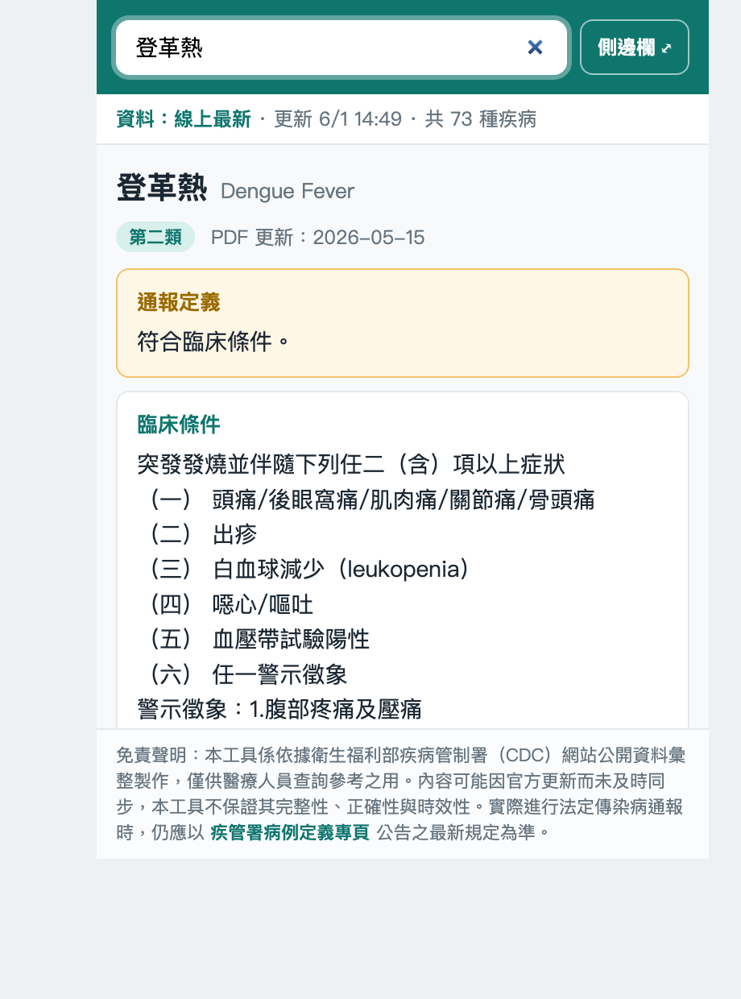
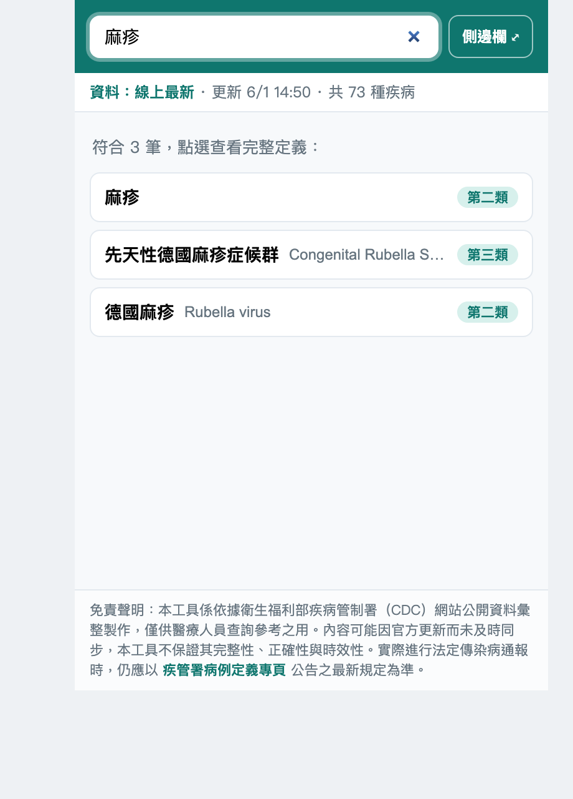
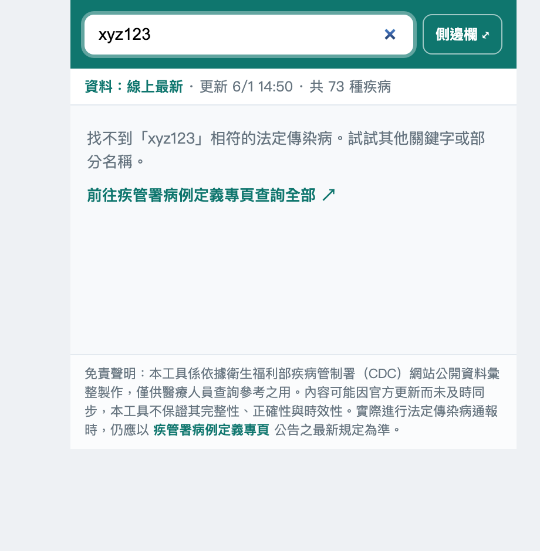

工具列彈出視窗、側邊欄常駐、以及在任何網頁選取文字後右鍵查詢。
線上抓取最新定義、本地備援離線可用；狀態列標示資料來源與更新時間。
通報定義、臨床／檢驗／流行病學條件、可能／極可能／確定病例分類一次呈現。
檢體採檢送驗事項與每筆定義皆可一鍵開啟疾管署原始 PDF 對照。



此為網頁版展示，使用與擴充功能相同的程式與資料。安裝後即可在任何網頁順手查詢。
⚠️ Chrome 無法用 GitHub 網址一鍵安裝未上架的擴充功能，請先下載到電腦再「載入未封裝項目」，全程約 2 分鐘、不需寫程式。
<> Code → Download ZIP，解壓縮。chrome://extensions，開啟右上角「開發人員模式」。manifest.json 的資料夾。